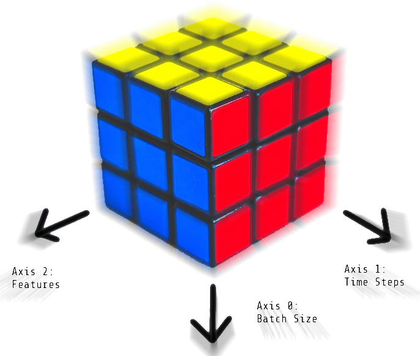

Time Series Processing Example¶
The goal of the present tutorial is to show how usage of the Neuraxle framework can make a difference in term of clean pipeline design through an example of time series processing.
The Dataset¶
It’ll be downloaded automatically for you in the code below.
We’re using a Human Activity Recognition (HAR) dataset captured using smartphones. The dataset can be found on the UCI Machine Learning Repository.
The task¶
Classify the type of movement amongst six categories from the phones’ sensor data:
WALKING,
WALKING_UPSTAIRS,
WALKING_DOWNSTAIRS,
SITTING,
STANDING,
LAYING.
Video dataset overview¶
Follow this link to see a video of the 6 activities recorded in the experiment with one of the participants:

[Watch video]
Details about the input data¶
The dataset’s description goes like this:
The sensor signals (accelerometer and gyroscope) were pre-processed by applying noise filters and then sampled in fixed-width sliding windows of 2.56 sec and 50% overlap (128 readings/window). The sensor acceleration signal, which has gravitational and body motion components, was separated using a Butterworth low-pass filter into body acceleration and gravity. The gravitational force is assumed to have only low frequency components, therefore a filter with 0.3 Hz cutoff frequency was used.
Reference:
Davide Anguita, Alessandro Ghio, Luca Oneto, Xavier Parra and Jorge L. Reyes-Ortiz. A Public Domain Dataset for Human Activity Recognition Using Smartphones. 21th European Symposium on Artificial Neural Networks, Computational Intelligence and Machine Learning, ESANN 2013. Bruges, Belgium 24-26 April 2013.
That said, I will use the almost raw data: only the gravity effect has been filtered out of the accelerometer as a preprocessing step for another 3D feature as an input to help learning. If you’d ever want to extract the gravity by yourself, you could use the following Butterworth Low-Pass Filter (LPF) and edit it to have the right cutoff frequency of 0.3 Hz which is a good frequency for activity recognition from body sensors.
Here is how the 3D data cube looks like. So we’ll have a train and a test data cube, and might create validation data cubes as well:

So we have 3D data of shape [batch_size, time_steps, features]. If this and the above is still unclear to you, you may want to learn more on the 3D shape of time series data.
Loading the Dataset¶
This first part downloads and load the dataset
[1]:
import urllib
import os
from subprocess import call
def download_dataset_if_needed():
print("Downloading...")
if not os.path.exists("UCI HAR Dataset.zip"):
call(
'wget "https://archive.ics.uci.edu/ml/machine-learning-databases/00240/UCI HAR Dataset.zip"',
shell=True
)
print("Downloading done.\n")
else:
print("Dataset already downloaded. Did not download twice.\n")
print("Extracting...")
extract_directory = os.path.abspath("UCI HAR Dataset")
if not os.path.exists(extract_directory):
call(
'unzip -nq "UCI HAR Dataset.zip"',
shell=True
)
print("Extracting successfully done to {}.".format(extract_directory))
else:
print("Dataset already extracted. Did not extract twice.\n")
DATA_PATH = "data/"
if not os.path.exists(DATA_PATH): os.mkdir(DATA_PATH)
os.chdir(DATA_PATH)
download_dataset_if_needed()
os.chdir("..")
DATASET_PATH = DATA_PATH + "UCI HAR Dataset/"
print("\n" + "Dataset is now located at: " + DATASET_PATH)
Downloading...
Downloading done.
Extracting...
Extracting successfully done to /home/gui/Documents/Neuraxio/Marketing/talks/AiHubspot 2021/data/UCI HAR Dataset.
Dataset is now located at: data/UCI HAR Dataset/
[2]:
try:
import neuraxle
assert neuraxle.__version__ == '0.6.0'
except:
!pip install neuraxle==0.6.0
[3]:
import numpy as np
# Useful Constants
DATA_PATH = "data/"
DATASET_PATH = DATA_PATH + "UCI HAR Dataset/"
# Those are separate normalised input features for the neural network
INPUT_SIGNAL_TYPES = [
"body_acc_x_",
"body_acc_y_",
"body_acc_z_",
"body_gyro_x_",
"body_gyro_y_",
"body_gyro_z_",
"total_acc_x_",
"total_acc_y_",
"total_acc_z_"
]
# Output classes to learn how to classify
LABELS = [
"WALKING",
"WALKING_UPSTAIRS",
"WALKING_DOWNSTAIRS",
"SITTING",
"STANDING",
"LAYING"
]
TRAIN = "train/"
TEST = "test/"
def load_all_data():
# Load "X" (the neural network's training and testing inputs)
def load_X(X_signals_paths):
X_signals = []
for signal_type_path in X_signals_paths:
file = open(signal_type_path, 'r')
# Read dataset from disk, dealing with text files' syntax
X_signals.append(
[np.array(serie, dtype=np.float32) for serie in [
row.replace(' ', ' ').strip().split(' ') for row in file
]]
)
file.close()
return np.transpose(np.array(X_signals), (1, 2, 0))
X_train_signals_paths = [
DATASET_PATH + TRAIN + "Inertial Signals/" + signal + "train.txt" for signal in INPUT_SIGNAL_TYPES
]
X_test_signals_paths = [
DATASET_PATH + TEST + "Inertial Signals/" + signal + "test.txt" for signal in INPUT_SIGNAL_TYPES
]
X_train = load_X(X_train_signals_paths)
X_test = load_X(X_test_signals_paths)
def load_y(y_path):
file = open(y_path, 'r')
# Read dataset from disk, dealing with text file's syntax
y_ = np.array(
[elem for elem in [
row.replace(' ', ' ').strip().split(' ') for row in file
]],
dtype=np.int32
)
file.close()
# Substract 1 to each output class for friendly 0-based indexing
return y_ - 1
y_train_path = DATASET_PATH + TRAIN + "y_train.txt"
y_test_path = DATASET_PATH + TEST + "y_test.txt"
y_train = load_y(y_train_path)
y_test = load_y(y_test_path)
print("Some useful info to get an insight on dataset's shape and normalisation:")
print("(X shape, y shape, every X's mean, every X's standard deviation)")
print(X_test.shape, y_test.shape, np.mean(X_test), np.std(X_test))
return X_train, y_train, X_test, y_test
[4]:
# Finally load dataset!
X_train, y_train, X_test, y_test = load_all_data()
print("Dataset loaded!")
Some useful info to get an insight on dataset's shape and normalisation:
(X shape, y shape, every X's mean, every X's standard deviation)
(2947, 128, 9) (2947, 1) 0.09913992 0.39567086
Dataset loaded!
Part 1 - How would you code this in a typical ML project using Scikit-learn¶
We’ll first define functions that will extract features from the 3d data.
[5]:
import numpy as np
from sklearn.metrics import accuracy_score
from sklearn.tree import DecisionTreeClassifier
def get_fft_peak_infos(real_fft, time_bins_axis=-2):
"""
Extract the indices of the bins with maximal amplitude, and the corresponding amplitude values.
:param fft: real magnitudes of an fft. It could be of shape [N, bins, features].
:param time_bins_axis: axis of the frequency bins (e.g.: time axis before fft).
:return: Two arrays without bins. One is an int, the other is a float. Shape: ([N, features], [N, features])
"""
peak_bin = np.argmax(real_fft, axis=time_bins_axis)
peak_bin_val = np.max(real_fft, axis=time_bins_axis)
return peak_bin, peak_bin_val
def fft_magnitudes(data_inputs, time_axis=-2):
"""
Apply a Fast Fourier Transform operation to analyze frequencies, and return real magnitudes.
The bins past the half (past the nyquist frequency) are discarded, which result in shorter time series.
:param data_inputs: ND array of dimension at least 1. For instance, this could be of shape [N, time_axis, features]
:param time_axis: axis along which the time series evolve
:return: real magnitudes of the data_inputs. For instance, this could be of shape [N, (time_axis / 2) + 1, features]
so here, we have `bins = (time_axis / 2) + 1`.
"""
fft = np.fft.rfft(data_inputs, axis=time_axis)
real_fft = np.absolute(fft)
return real_fft
def get_fft_features(x_data):
"""
Will featurize data with an FFT.
:param x_data: 3D time series of shape [batch_size, time_steps, sensors]
:return: featurized time series with FFT of shape [batch_size, features]
"""
real_fft = fft_magnitudes(x_data)
flattened_fft = real_fft.reshape(real_fft.shape[0], -1)
peak_bin, peak_bin_val = get_fft_peak_infos(real_fft)
return flattened_fft, peak_bin, peak_bin_val
def featurize_data(x_data):
"""
Will convert 3D time series of shape [batch_size, time_steps, sensors] to shape [batch_size, features]
to prepare data for machine learning.
:param x_data: 3D time series of shape [batch_size, time_steps, sensors]
:return: featurized time series of shape [batch_size, features]
"""
print("Input shape before feature union:", x_data.shape)
flattened_fft, peak_bin, peak_bin_val = get_fft_features(x_data)
mean = np.mean(x_data, axis=-2)
median = np.median(x_data, axis=-2)
min = np.min(x_data, axis=-2)
max = np.max(x_data, axis=-2)
featurized_data = np.concatenate([
flattened_fft,
peak_bin,
peak_bin_val,
mean,
median,
min,
max,
], axis=-1)
print("Shape after feature union, before classification:", featurized_data.shape)
return featurized_data
[6]:
# Shape: [batch_size, time_steps, sensor_features]
X_train_featurized = featurize_data(X_train)
# Shape: [batch_size, remade_features]
classifier = DecisionTreeClassifier()
classifier.fit(X_train_featurized, y_train)
Input shape before feature union: (7352, 128, 9)
Shape after feature union, before classification: (7352, 639)
[6]:
DecisionTreeClassifier()
[7]:
# Shape: [batch_size, time_steps, sensor_features]
X_test_featurized = featurize_data(X_test)
# Shape: [batch_size, remade_features]
y_pred = classifier.predict(X_test_featurized)
print("Shape at output after classification:", y_pred.shape)
# Shape: [batch_size]
accuracy = accuracy_score(y_pred=y_pred, y_true=y_test)
print("Accuracy of sklearn pipeline code:", accuracy)
Input shape before feature union: (2947, 128, 9)
Shape after feature union, before classification: (2947, 639)
Shape at output after classification: (2947,)
Accuracy of sklearn pipeline code: 0.8642687478791992
Part 2 - How to code a similar pipeline - but cleaner - using Neuraxle¶
To make ourselves a cleaner pipeline, we’ll define each of our transformation as steps. Defining our pipeline in term of steps allows us to implement separately the behaviour on fit calls and on transform calls. In our present case though, we only need to define a transform behaviour.
[8]:
from neuraxle.base import BaseStep, NonFittableMixin
from neuraxle.steps.numpy import NumpyConcatenateInnerFeatures, NumpyShapePrinter, NumpyFlattenDatum, NumpyRavel
class NumpyStep(NonFittableMixin, BaseStep):
def __init__(self):
BaseStep.__init__(self)
NonFittableMixin.__init__(self)
class NumpyFFT(NumpyStep):
def transform(self, data_inputs):
"""
Featurize time series data with FFT.
:param data_inputs: time series data of 3D shape: [batch_size, time_steps, sensors_readings]
:return: featurized data is of 2D shape: [batch_size, n_features]
"""
transformed_data = np.fft.rfft(data_inputs, axis=-2)
return transformed_data
class FFTPeakBinWithValue(NumpyStep):
def transform(self, data_inputs):
"""
Will compute peak fft bins (int), and their magnitudes' value (float), to concatenate them.
:param data_inputs: real magnitudes of an fft. It could be of shape [batch_size, bins, features].
:return: Two arrays without bins concatenated on feature axis. Shape: [batch_size, 2 * features]
"""
time_bins_axis = -2
peak_bin = np.argmax(data_inputs, axis=time_bins_axis)
peak_bin_val = np.max(data_inputs, axis=time_bins_axis)
# Notice that here another FeatureUnion could have been used with a joiner:
transformed = np.concatenate([peak_bin, peak_bin_val], axis=-1)
return transformed
class NumpyAbs(NumpyStep):
def transform(self, data_inputs):
"""
Will featurize data with a max.
:param data_inputs: 3D time series of shape [batch_size, time_steps, sensors]
:return: featurized time series of shape [batch_size, features]
"""
return np.abs(data_inputs)
class NumpyMean(NumpyStep):
def transform(self, data_inputs):
"""
Will featurize data with a mean.
:param data_inputs: 3D time series of shape [batch_size, time_steps, sensors]
:return: featurized time series of shape [batch_size, features]
"""
return np.mean(data_inputs, axis=-2)
class NumpyMedian(NumpyStep):
def transform(self, data_inputs):
"""
Will featurize data with a median.
:param data_inputs: 3D time series of shape [batch_size, time_steps, sensors]
:return: featurized time series of shape [batch_size, features]
"""
return np.median(data_inputs, axis=-2)
class NumpyMin(NumpyStep):
def transform(self, data_inputs):
"""
Will featurize data with a min.
:param data_inputs: 3D time series of shape [batch_size, time_steps, sensors]
:return: featurized time series of shape [batch_size, features]
"""
return np.min(data_inputs, axis=-2)
class NumpyMax(NumpyStep):
def transform(self, data_inputs):
"""
Will featurize data with a max.
:param data_inputs: 3D time series of shape [batch_size, time_steps, sensors]
:return: featurized time series of shape [batch_size, features]
"""
return np.max(data_inputs, axis=-2)
Next, we’ll define a set of classifier we’d like to test and their respective hyperparameter space we’d like to explore.
[9]:
from neuraxle.hyperparams.distributions import Choice, Boolean
from neuraxle.hyperparams.distributions import RandInt, LogUniform
from neuraxle.hyperparams.space import HyperparameterSpace
from neuraxle.pipeline import Pipeline
from neuraxle.steps.output_handlers import OutputTransformerWrapper
from neuraxle.steps.sklearn import SKLearnWrapper
from sklearn.ensemble import RandomForestClassifier
from sklearn.linear_model import RidgeClassifier, LogisticRegression
from sklearn.tree import DecisionTreeClassifier, ExtraTreeClassifier
decision_tree_classifier = SKLearnWrapper(
DecisionTreeClassifier(),
HyperparameterSpace({
'criterion': Choice(['gini', 'entropy']),
'splitter': Choice(['best', 'random']),
'min_samples_leaf': RandInt(2, 5),
'min_samples_split': Choice([0.5, 1.0, 2, 3]),
})).set_name('DecisionTreeClassifier')
extra_tree_classifier = SKLearnWrapper(
ExtraTreeClassifier(),
HyperparameterSpace({
'criterion': Choice(['gini', 'entropy']),
'splitter': Choice(['best', 'random']),
'min_samples_leaf': RandInt(2, 5),
'min_samples_split': Choice([0.5, 1.0, 2, 3]),
})).set_name('ExtraTreeClassifier')
ridge_classifier = Pipeline([OutputTransformerWrapper(NumpyRavel()), SKLearnWrapper(
RidgeClassifier(),
HyperparameterSpace({
'alpha': Choice([0.0, 1.0, 10.0]),
'fit_intercept': Boolean(),
'normalize': Boolean()
}))
]).set_name('RidgeClassifier')
logistic_regression = Pipeline([OutputTransformerWrapper(NumpyRavel()), SKLearnWrapper(
LogisticRegression(),
HyperparameterSpace({
'C': LogUniform(0.01, 10.0),
'fit_intercept': Boolean(),
'penalty': Choice(['none', 'l2']),
'max_iter': RandInt(20, 200)
}))
]).set_name('LogisticRegression')
random_forest_classifier = Pipeline([OutputTransformerWrapper(NumpyRavel()), SKLearnWrapper(
RandomForestClassifier(),
HyperparameterSpace({
'n_estimators': RandInt(50, 600),
'criterion': Choice(['gini', 'entropy']),
'min_samples_leaf': RandInt(2, 5),
'min_samples_split': Choice([0.5, 1.0, 2, 3]),
'bootstrap': Boolean()
}))
]).set_name('RandomForestClassifier')
We now have all the pieces to define a proper Neuraxle Pipeline.
[10]:
from neuraxle.steps.flow import TrainOnlyWrapper, ChooseOneStepOf
from neuraxle.steps.numpy import NumpyConcatenateInnerFeatures, NumpyShapePrinter, NumpyFlattenDatum
from neuraxle.union import FeatureUnion
pipeline = Pipeline([
TrainOnlyWrapper(NumpyShapePrinter(custom_message="Input shape before feature union")),
FeatureUnion([
Pipeline([
NumpyFFT(),
NumpyAbs(),
FeatureUnion([
NumpyFlattenDatum(), # Reshape from 3D to flat 2D: flattening data except on batch size
FFTPeakBinWithValue() # Extract 2D features from the 3D FFT bins
], joiner=NumpyConcatenateInnerFeatures())
]),
NumpyMean(),
NumpyMedian(),
NumpyMin(),
NumpyMax()
], joiner=NumpyConcatenateInnerFeatures()),
TrainOnlyWrapper(NumpyShapePrinter(custom_message="Shape after feature union, before classification")),
# Shape: [batch_size, remade_features]
ChooseOneStepOf([
decision_tree_classifier,
extra_tree_classifier,
ridge_classifier,
logistic_regression,
random_forest_classifier
]),
TrainOnlyWrapper(NumpyShapePrinter(custom_message="Shape at output after classification")),
# Shape: [batch_size]
])
Now that we have defined our pipeline, we can give it to an AutoML loop which will explore the hyperparameter space for us!
[11]:
import shutil
# Clear cache if we've already ran the AutoML to start fresh:
cache_folder = 'cache'
if os.path.exists(cache_folder):
shutil.rmtree(cache_folder)
os.makedirs(cache_folder, exist_ok=True)
[12]:
from neuraxle.metaopt.auto_ml import AutoML, InMemoryHyperparamsRepository, ValidationSplitter, \
RandomSearchHyperparameterSelectionStrategy
#from neuraxle.metaopt.tpe import TreeParzenEstimatorSelectionStrategy
#from neuraxle.metaopt.auto_ml import HyperparamsJSONRepository
from neuraxle.metaopt.callbacks import ScoringCallback
from sklearn.metrics import accuracy_score
auto_ml = AutoML(
pipeline=pipeline,
hyperparams_optimizer=RandomSearchHyperparameterSelectionStrategy(),
validation_splitter=ValidationSplitter(test_size=0.20),
scoring_callback=ScoringCallback(accuracy_score, higher_score_is_better=True),
n_trials=10,
epochs=1,
hyperparams_repository=InMemoryHyperparamsRepository(cache_folder=cache_folder),
refit_trial=True,
# callbacks=[MetricCallbacks(...)]
)
[13]:
auto_ml = auto_ml.fit(X_train, y_train)
[12:14:24][INFO][auto_ml][246]:
new trial: {
"ChooseOneStepOf": {
"DecisionTreeClassifier": {
"Optional(DecisionTreeClassifier)": {
"criterion": "entropy",
"min_samples_leaf": 3,
"min_samples_split": 0.5,
"splitter": "random"
}
},
"ExtraTreeClassifier": {
"Optional(ExtraTreeClassifier)": {
"criterion": "entropy",
"min_samples_leaf": 4,
"min_samples_split": 2,
"splitter": "best"
}
},
"LogisticRegression": {
"Optional(LogisticRegression)": {
"SKLearnWrapper_LogisticRegression": {
"C": 0.0734038830915426,
"fit_intercept": false,
"max_iter": 52,
"penalty": "none"
}
}
},
"RandomForestClassifier": {
"Optional(RandomForestClassifier)": {
"SKLearnWrapper_RandomForestClassifier": {
"bootstrap": true,
"criterion": "entropy",
"min_samples_leaf": 3,
"min_samples_split": 2,
"n_estimators": 255
}
}
},
"RidgeClassifier": {
"Optional(RidgeClassifier)": {
"SKLearnWrapper_RidgeClassifier": {
"alpha": 0.0,
"fit_intercept": false,
"normalize": true
}
}
},
"choice": "ExtraTreeClassifier"
}
}
[12:14:24][INFO][auto_ml][862]: trial 1/10
[12:14:24][INFO][auto_ml][590]: fitting trial 1/10 split 1/1
hyperparams: {
"ChooseOneStepOf": {
"DecisionTreeClassifier": {
"Optional(DecisionTreeClassifier)": {
"ccp_alpha": 0.0,
"class_weight": null,
"criterion": "entropy",
"max_depth": null,
"max_features": null,
"max_leaf_nodes": null,
"min_impurity_decrease": 0.0,
"min_impurity_split": null,
"min_samples_leaf": 3,
"min_samples_split": 0.5,
"min_weight_fraction_leaf": 0.0,
"random_state": null,
"splitter": "random"
},
"enabled": false
},
"ExtraTreeClassifier": {
"Optional(ExtraTreeClassifier)": {
"ccp_alpha": 0.0,
"class_weight": null,
"criterion": "entropy",
"max_depth": null,
[...]
[...]
[...]
},
"TrainOnlyWrapper2": {
"NumpyShapePrinter": {}
}
}
[12:19:42][INFO][auto_ml][630]: epoch 1/1
NumpyShapePrinter: (5881, 128, 9) Input shape before feature union
NumpyShapePrinter: (5881, 639) Shape after feature union, before classification
[12:19:43][INFO][trial][450]: main train: 0.5279714334296888
[12:19:43][INFO][trial][471]: main validation: 0.5248130523453433
[12:19:43][INFO][auto_ml][605]: success trial 10/10 split 1/1
hyperparams: {
"ChooseOneStepOf": {
"DecisionTreeClassifier": {
"Optional(DecisionTreeClassifier)": {
"ccp_alpha": 0.0,
"class_weight": null,
"criterion": "entropy",
"max_depth": null,
"max_features": null,
"max_leaf_nodes": null,
"min_impurity_decrease": 0.0,
"min_impurity_split": null,
"min_samples_leaf": 3,
"min_samples_split": 3,
"min_weight_fraction_leaf": 0.0,
"random_state": null,
"splitter": "random"
},
"enabled": false
},
"ExtraTreeClassifier": {
"Optional(ExtraTreeClassifier)": {
"ccp_alpha": 0.0,
"class_weight": null,
"criterion": "gini",
"max_depth": null,
"max_features": "auto",
"max_leaf_nodes": null,
"min_impurity_decrease": 0.0,
"min_impurity_split": null,
"min_samples_leaf": 5,
"min_samples_split": 0.5,
"min_weight_fraction_leaf": 0.0,
"random_state": null,
"splitter": "best"
},
"enabled": true
},
"LogisticRegression": {
"Optional(LogisticRegression)": {
"OutputTransformerWrapper": {
"NumpyRavel": {}
},
"SKLearnWrapper_LogisticRegression": {
"C": 8.175969462206426,
"class_weight": null,
"dual": false,
"fit_intercept": true,
"intercept_scaling": 1,
"l1_ratio": null,
"max_iter": 178,
"multi_class": "auto",
"n_jobs": null,
"penalty": "l2",
"random_state": null,
"solver": "lbfgs",
"tol": 0.0001,
"verbose": 0,
"warm_start": false
}
},
"enabled": false
},
"RandomForestClassifier": {
"Optional(RandomForestClassifier)": {
"OutputTransformerWrapper": {
"NumpyRavel": {}
},
"SKLearnWrapper_RandomForestClassifier": {
"bootstrap": false,
"ccp_alpha": 0.0,
"class_weight": null,
"criterion": "entropy",
"max_depth": null,
"max_features": "auto",
"max_leaf_nodes": null,
"max_samples": null,
"min_impurity_decrease": 0.0,
"min_impurity_split": null,
"min_samples_leaf": 4,
"min_samples_split": 2,
"min_weight_fraction_leaf": 0.0,
"n_estimators": 133,
"n_jobs": null,
"oob_score": false,
"random_state": null,
"verbose": 0,
"warm_start": false
}
},
"enabled": false
},
"RidgeClassifier": {
"Optional(RidgeClassifier)": {
"OutputTransformerWrapper": {
"NumpyRavel": {}
},
"SKLearnWrapper_RidgeClassifier": {
"alpha": 10.0,
"class_weight": null,
"copy_X": true,
"fit_intercept": false,
"max_iter": null,
"normalize": true,
"random_state": null,
"solver": "auto",
"tol": 0.001
}
},
"enabled": false
},
"choice": "ExtraTreeClassifier",
"joiner": {}
},
"FeatureUnion": {
"NumpyMax": {},
"NumpyMean": {},
"NumpyMedian": {},
"NumpyMin": {},
"Pipeline": {
"FeatureUnion": {
"FFTPeakBinWithValue": {},
"NumpyFlattenDatum": {},
"joiner": {}
},
"NumpyAbs": {},
"NumpyFFT": {}
},
"joiner": {}
},
"TrainOnlyWrapper": {
"NumpyShapePrinter": {}
},
"TrainOnlyWrapper1": {
"NumpyShapePrinter": {}
},
"TrainOnlyWrapper2": {
"NumpyShapePrinter": {}
}
}
best score: 0.5248130523453433 at epoch 0
[12:19:43][INFO][auto_ml][832]:
best hyperparams: {
"ChooseOneStepOf": {
"DecisionTreeClassifier": {
"Optional(DecisionTreeClassifier)": {
"ccp_alpha": 0.0,
"class_weight": null,
"criterion": "gini",
"max_depth": null,
"max_features": null,
"max_leaf_nodes": null,
"min_impurity_decrease": 0.0,
"min_impurity_split": null,
"min_samples_leaf": 2,
"min_samples_split": 0.5,
"min_weight_fraction_leaf": 0.0,
"random_state": null,
"splitter": "random"
},
"enabled": false
},
"ExtraTreeClassifier": {
"Optional(ExtraTreeClassifier)": {
"ccp_alpha": 0.0,
"class_weight": null,
"criterion": "entropy",
"max_depth": null,
"max_features": "auto",
"max_leaf_nodes": null,
"min_impurity_decrease": 0.0,
"min_impurity_split": null,
"min_samples_leaf": 4,
"min_samples_split": 1.0,
"min_weight_fraction_leaf": 0.0,
"random_state": null,
"splitter": "best"
},
"enabled": false
},
"LogisticRegression": {
"Optional(LogisticRegression)": {
"OutputTransformerWrapper": {
"NumpyRavel": {}
},
"SKLearnWrapper_LogisticRegression": {
"C": 6.020923240680797,
"class_weight": null,
"dual": false,
"fit_intercept": false,
"intercept_scaling": 1,
"l1_ratio": null,
"max_iter": 98,
"multi_class": "auto",
"n_jobs": null,
"penalty": "none",
"random_state": null,
"solver": "lbfgs",
"tol": 0.0001,
"verbose": 0,
"warm_start": false
}
},
"enabled": true
},
"RandomForestClassifier": {
"Optional(RandomForestClassifier)": {
"OutputTransformerWrapper": {
"NumpyRavel": {}
},
"SKLearnWrapper_RandomForestClassifier": {
"bootstrap": true,
"ccp_alpha": 0.0,
"class_weight": null,
"criterion": "entropy",
"max_depth": null,
"max_features": "auto",
"max_leaf_nodes": null,
"max_samples": null,
"min_impurity_decrease": 0.0,
"min_impurity_split": null,
"min_samples_leaf": 2,
"min_samples_split": 3,
"min_weight_fraction_leaf": 0.0,
"n_estimators": 510,
"n_jobs": null,
"oob_score": false,
"random_state": null,
"verbose": 0,
"warm_start": false
}
},
"enabled": false
},
"RidgeClassifier": {
"Optional(RidgeClassifier)": {
"OutputTransformerWrapper": {
"NumpyRavel": {}
},
"SKLearnWrapper_RidgeClassifier": {
"alpha": 1.0,
"class_weight": null,
"copy_X": true,
"fit_intercept": false,
"max_iter": null,
"normalize": true,
"random_state": null,
"solver": "auto",
"tol": 0.001
}
},
"enabled": false
},
"choice": "LogisticRegression",
"joiner": {}
},
"FeatureUnion": {
"NumpyMax": {},
"NumpyMean": {},
"NumpyMedian": {},
"NumpyMin": {},
"Pipeline": {
"FeatureUnion": {
"FFTPeakBinWithValue": {},
"NumpyFlattenDatum": {},
"joiner": {}
},
"NumpyAbs": {},
"NumpyFFT": {}
},
"joiner": {}
},
"TrainOnlyWrapper": {
"NumpyShapePrinter": {}
},
"TrainOnlyWrapper1": {
"NumpyShapePrinter": {}
},
"TrainOnlyWrapper2": {
"NumpyShapePrinter": {}
}
}
NumpyShapePrinter: (7352, 128, 9) Input shape before feature union
NumpyShapePrinter: (7352, 639) Shape after feature union, before classification
/usr/local/lib/python3.6/dist-packages/sklearn/linear_model/_logistic.py:1323: UserWarning: Setting penalty='none' will ignore the C and l1_ratio parameters
"Setting penalty='none' will ignore the C and l1_ratio "
/usr/local/lib/python3.6/dist-packages/sklearn/linear_model/_logistic.py:765: ConvergenceWarning: lbfgs failed to converge (status=1):
STOP: TOTAL NO. of ITERATIONS REACHED LIMIT.
Increase the number of iterations (max_iter) or scale the data as shown in:
https://scikit-learn.org/stable/modules/preprocessing.html
Please also refer to the documentation for alternative solver options:
https://scikit-learn.org/stable/modules/linear_model.html#logistic-regression
extra_warning_msg=_LOGISTIC_SOLVER_CONVERGENCE_MSG)
[14]:
best_pipeline = auto_ml.get_best_model()
y_pred = best_pipeline.predict(X_test)
accuracy = accuracy_score(y_true=y_test, y_pred=y_pred)
print("Test accuracy score:", accuracy)
assert accuracy > 0.9, "Try again harder!"
# It's getting good on this dataset if you're over 92%. The current code is able to do this.
Test accuracy score: 0.9365456396335257